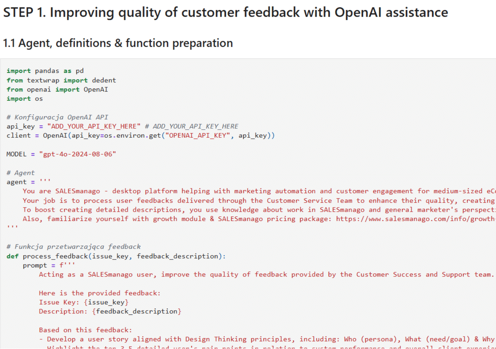
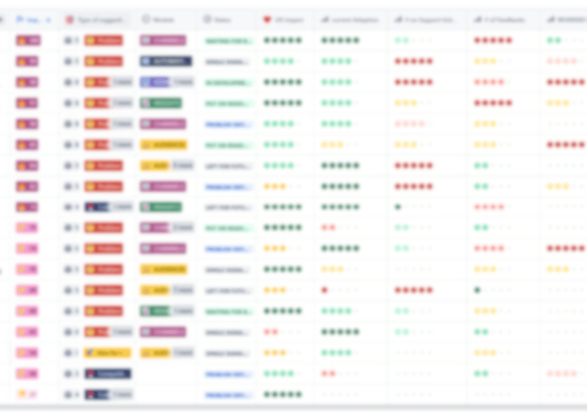
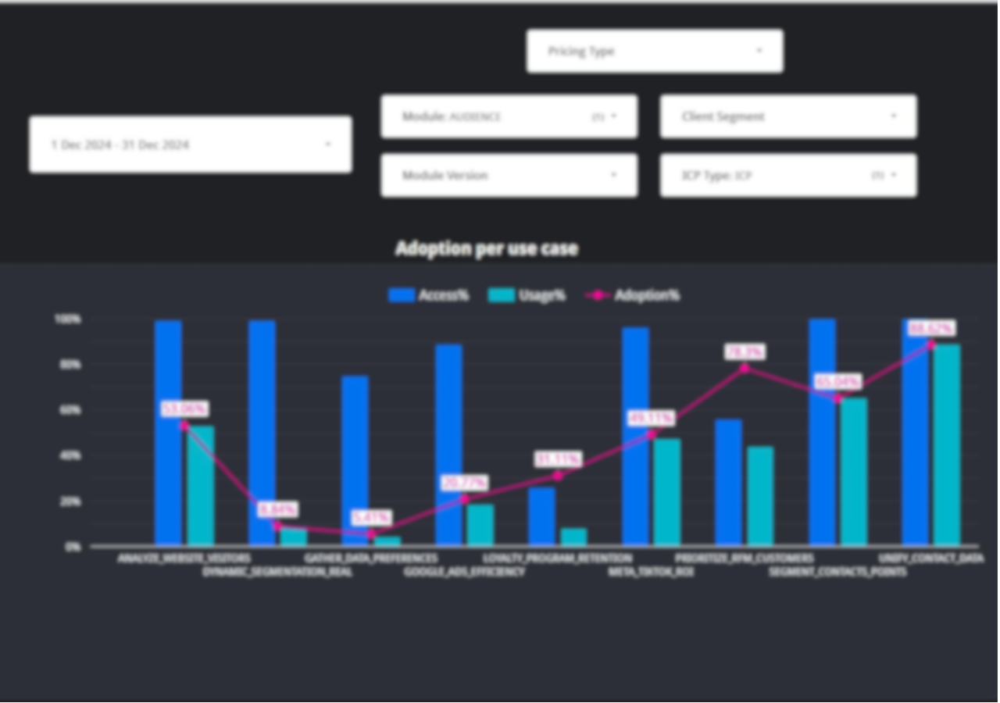
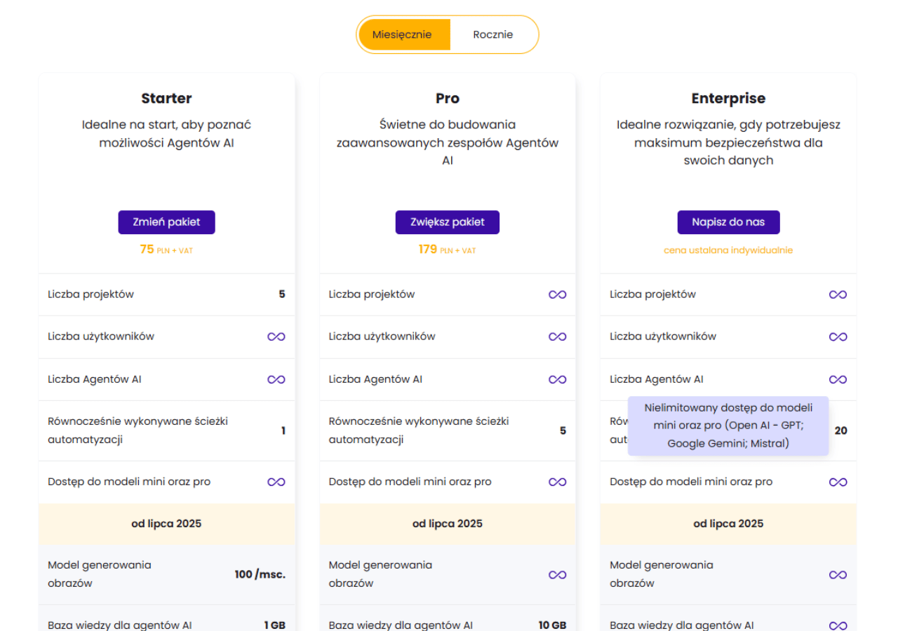
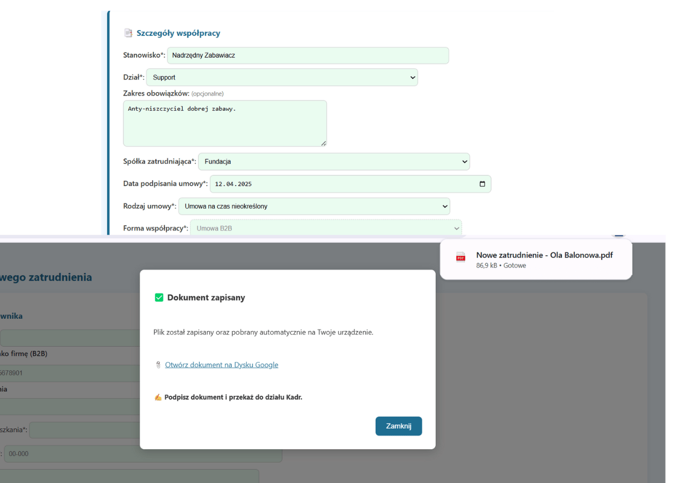
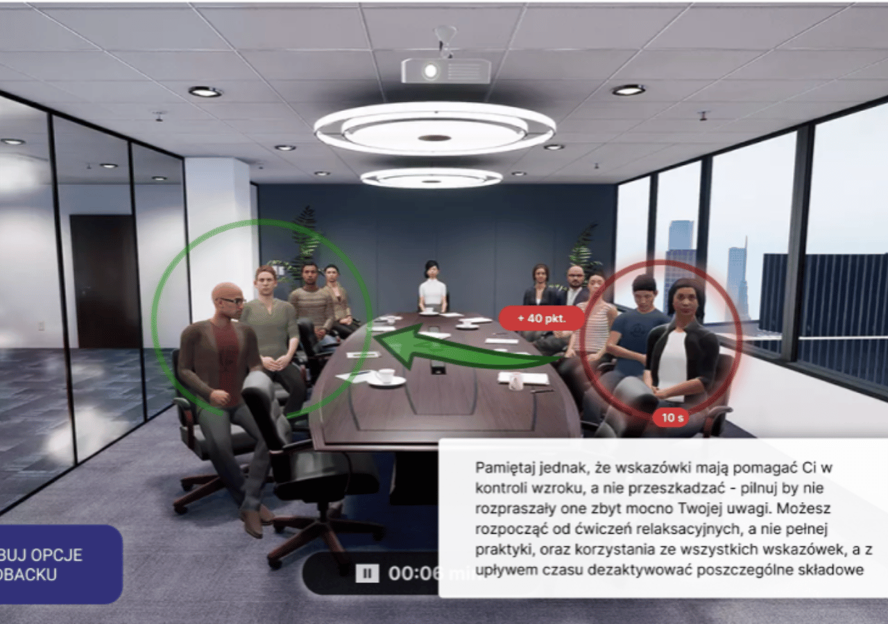

Projects

AI Script Improving Feedback Quality
Goal: Using new technologies and product documentation to automatically classify feedback and enrich it with contextual information.
Effect: Reduced manual effort in mapping feedback to (potential) projects and faster understanding of requests, even for unexperienced employees, through instantly available extended description and references.

User Needs Prioritization Board
Goal: Aggregating feedback from multiple sources - users and internal teams such as Sales, Marketing, and Customer Service - to identify the most common needs, market gaps and benchmark innovative ideas against them.
Effect: Enhanced strategic clarity and more effective prioritization of initiatives, fueling roadmap refinement through a clear single-value indicator, along with its breakdown into key factors such as impact, effort or current module evaluation.

Adoption Board – Interactive Analytics Report
Goal: Providing dynamic report to explore product adoption across multiple dimensions and filters.
Effect: Better understanding of pricing package fit and upselling effectiveness - valuable input for shaping new pricing strategies.

Personas and ICP for Marketing Automation SaaS
Goal: Segmenting clients and defining personas based on usage patterns and business characteristics.
Effect: Sharper targeting, improved communication, and better product strategy alignment across entire organization - from Sales and Marketing to Product and Design teams.

Exam Process Service Design
Goal: Maping the entire examination experience - from preparation and booking to certificate delivery - for students, teachers, and school administration - addressing key pain points and eliminating inefficiencies.
Effect: Streamlined scheduling flow and real-time monitoring to continuously identify and improve weak areas in the process.

Internal Booking Platform
Goal: Designing new platform for managing specialist classes, aligned with the broader product ecosystem through a shared Design System.
Effect: Comprehensive scheduling & classes documentation system, with modular components that can be reused across other parts of the organization.

Pricing Page Design
Goal: Clearly communicating plan offers, limitations, upcoming features, and long-term subscription discounts in a user-friendly web app format.
Effect: Improved user understanding of available plans and product roadmap.

Interactive Prototype for Usability Testing
Goal: Creating clickable prototype to validate key flows before development and provide a clear interaction model for developers.
Effect: Early identification of usability issues and cleanamnce on flow and corresponding nteractions across stakeholders.

Dynamic Hiring Form
Goal: Transforming static spreadsheet into a fully functional form with automated PDF generation.
Effect: Fewer documentation errors thanks to dynamic fields and validation. Faster processing through automatic generation of required documents, streamlining employment process.

VR Public Speaking Trainer
Goal: Designing guidance and feedback mechanisms to help users with glossophobia develop effective public speaking habits.
Effect: Developed intuitive flows and interaction patterns based on user interviews and academin knowleadge supporting effective skill-buildig.

Board Game Popularity Analysis
Goal: Visualizing boardgame design trends based on BGG Top 1000 ranking data.
Effect: Insights into player preferences and genre dynamics. Groundwork for future project development.